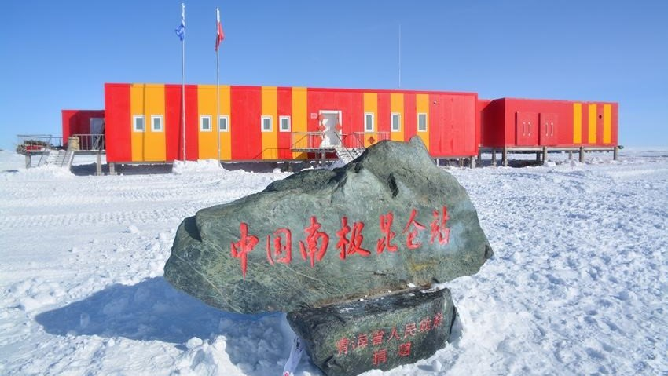
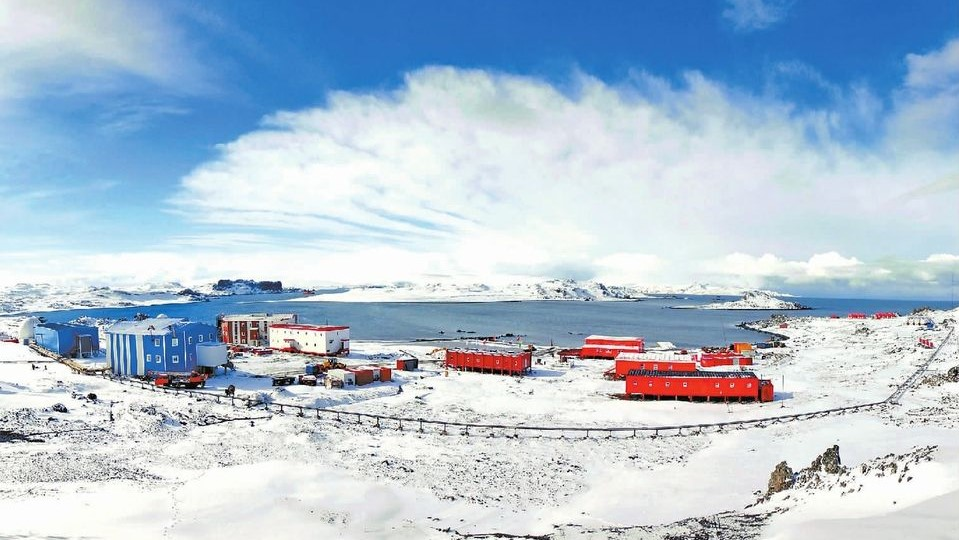

尔后的长城站，又进行了四次扩建。现在有各种建筑25座，建筑面积4200平方米。站区南北长2公里，东西宽1.26公里，占地面积2.52平方公里。夏季可容纳60人工作，冬季可供20人左右越冬考察。现在，中国在南极已建立了四个科学考察站，除长城站外，还有中山站、昆仑站、泰山站。中国的南极科考已经具备了从南极边缘向大陆纵深拓展的能力，已经从极地科考大国向科考强国迈进。
南极科考站分布图
南极昆仑站
南极长城站
问题六：2003年10月15日。“______”载人飞船在酒泉卫星发射中心发射升空，飞船载着中国飞天第一人——杨利伟在太空中遨游14圈后，安全着陆于内蒙古自治区四子王旗，首次载人航天飞行取得圆满成功